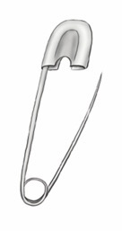
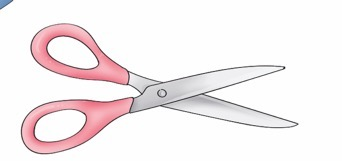
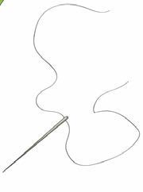
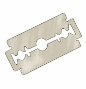
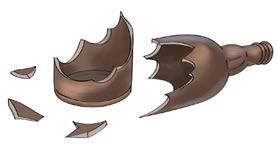
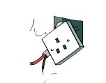
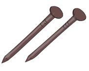
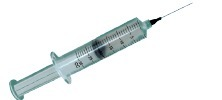
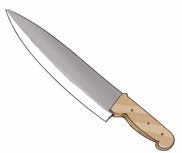
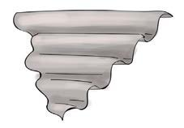

Chapter Three - Dangerous environments
Chapter Three
Dangerous environments and objects
I know dangerous objects.

I avoid dangerous objects to be safe.











Questions
1. Name the dangerous objects you observed in pictures 1–10 or identified from the information provided.
2. Name other dangerous objects that you know in your
environment.
Sing the song about dangerous objects and answer the questions that follow.
Song
It is bad to play with dangerous objects
You may get injured, bleed or become disabled as well
Razor blades and pairs of scissors, pins, and nails are dangerous objects.
Pieces of iron sheets, needles, knives are also dangerous objects.